Web Server Statistics for beta.pro-filr.com
Web Server Statistics for beta.pro-filr.com
Program started on Tue, May 29 2018 at 5:14 AM.
Analyzed requests from Fri, Apr 13 2018 at 10:05 AM to Mon, May 28 2018 at 5:57 PM (45.33 days).
Web Server Statistics for beta.pro-filr.comProgram started on Tue, May 29 2018 at 5:14 AM.
Analyzed requests from Fri, Apr 13 2018 at 10:05 AM to Mon, May 28 2018 at 5:57 PM (45.33 days).
(Go To: Top | General Summary | Monthly Report | Daily Summary | Hourly Summary | Domain Report | Organization Report | Redirected Referrer Report | Failed Referrer Report | Referring Site Report | Browser Report | Browser Summary | Operating System Report | Status Code Report | File Size Report | File Type Report | Directory Report | Request Report)
Figures in parentheses refer to the 7-day period ending May 29 2018 at 5:14 AM.
Successful requests: 4,149 (0)
Average successful requests per day: 91
Successful requests for pages: 74 (0)
Average successful requests for pages per day: 1
Failed requests: 81 (4)
Redirected requests: 29 (0)
Distinct files requested: 131 (0)
Distinct hosts served: 71 (0)
Data transferred: 97.02 megabytes (0 bytes)
Average data transferred per day: 2.14 megabytes (0 bytes)
(Go To: Top | General Summary | Monthly Report | Daily Summary | Hourly Summary | Domain Report | Organization Report | Redirected Referrer Report | Failed Referrer Report | Referring Site Report | Browser Report | Browser Summary | Operating System Report | Status Code Report | File Size Report | File Type Report | Directory Report | Request Report)
Each unit ( ) represents 1 request for a page.
) represents 1 request for a page.
| month | #reqs | #pages | |
|---|---|---|---|
| Apr 2018 | 1598 | 35 |   |
| May 2018 | 2551 | 39 |  |
Busiest month: May 2018 (39 requests for pages).
(Go To: Top | General Summary | Monthly Report | Daily Summary | Hourly Summary | Domain Report | Organization Report | Redirected Referrer Report | Failed Referrer Report | Referring Site Report | Browser Report | Browser Summary | Operating System Report | Status Code Report | File Size Report | File Type Report | Directory Report | Request Report)
Each unit () represents 1 request for a page.
| day | #reqs | #pages | |
|---|---|---|---|
| Sun | 774 | 13 |  |
| Mon | 1087 | 12 | |
| Tue | 669 | 13 | |
| Wed | 444 | 14 | |
| Thu | 59 | 1 | |
| Fri | 1053 | 17 |  |
| Sat | 63 | 4 | |
(Go To: Top | General Summary | Monthly Report | Daily Summary | Hourly Summary | Domain Report | Organization Report | Redirected Referrer Report | Failed Referrer Report | Referring Site Report | Browser Report | Browser Summary | Operating System Report | Status Code Report | File Size Report | File Type Report | Directory Report | Request Report)
Each unit () represents 1 request for a page.
| hour | #reqs | #pages | |
|---|---|---|---|
| 0 | 192 | 6 | |
| 1 | 219 | 3 | |
| 2 | 199 | 2 | |
| 3 | 70 | 1 | |
| 4 | 50 | 0 | |
| 5 | 14 | 1 | |
| 6 | 281 | 8 | |
| 7 | 615 | 8 | |
| 8 | 133 | 5 | |
| 9 | 203 | 4 | |
| 10 | 503 | 7 | |
| 11 | 261 | 8 | |
| 12 | 476 | 7 | |
| 13 | 258 | 4 | |
| 14 | 542 | 5 | |
| 15 | 23 | 1 | |
| 16 | 1 | 0 | |
| 17 | 0 | 0 | |
| 18 | 0 | 0 | |
| 19 | 0 | 0 | |
| 20 | 43 | 1 | |
| 21 | 0 | 0 | |
| 22 | 48 | 2 | |
| 23 | 18 | 1 | |
(Go To: Top | General Summary | Monthly Report | Daily Summary | Hourly Summary | Domain Report | Organization Report | Redirected Referrer Report | Failed Referrer Report | Referring Site Report | Browser Report | Browser Summary | Operating System Report | Status Code Report | File Size Report | File Type Report | Directory Report | Request Report)
Listing domains, sorted by the amount of traffic.
| #reqs | %bytes | domain |
|---|---|---|
| 4149 | 100% | [unresolved numerical addresses] |
(Go To: Top | General Summary | Monthly Report | Daily Summary | Hourly Summary | Domain Report | Organization Report | Redirected Referrer Report | Failed Referrer Report | Referring Site Report | Browser Report | Browser Summary | Operating System Report | Status Code Report | File Size Report | File Type Report | Directory Report | Request Report)
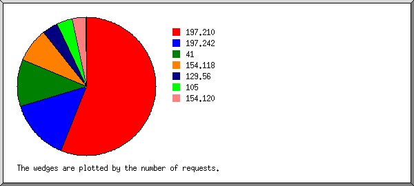
Listing organizations, sorted by the number of requests.
| #reqs | %bytes | organization |
|---|---|---|
| 2320 | 38.85% | 197.210 |
| 597 | 9.81% | 197.242 |
| 455 | 24.74% | 41 |
| 331 | 6.88% | 154.118 |
| 156 | 3.94% | 129.56 |
| 155 | 12.06% | 105 |
| 133 | 3.72% | 154.120 |
| 1 | 217.146 | |
| 1 | 42 |
(Go To: Top | General Summary | Monthly Report | Daily Summary | Hourly Summary | Domain Report | Organization Report | Redirected Referrer Report | Failed Referrer Report | Referring Site Report | Browser Report | Browser Summary | Operating System Report | Status Code Report | File Size Report | File Type Report | Directory Report | Request Report)
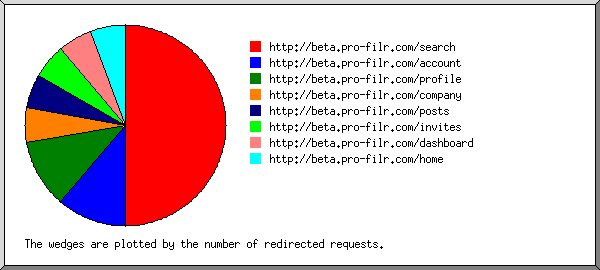
Listing referring URLs, sorted by the number of redirected requests.
(Go To: Top | General Summary | Monthly Report | Daily Summary | Hourly Summary | Domain Report | Organization Report | Redirected Referrer Report | Failed Referrer Report | Referring Site Report | Browser Report | Browser Summary | Operating System Report | Status Code Report | File Size Report | File Type Report | Directory Report | Request Report)
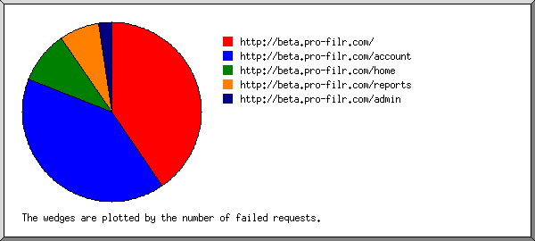
Listing referring URLs, sorted by the number of failed requests.
| #reqs | URL |
|---|---|
| 17 | http://beta.pro-filr.com/ |
| 17 | http://beta.pro-filr.com/account |
| 4 | http://beta.pro-filr.com/home |
| 3 | http://beta.pro-filr.com/reports |
| 1 | http://beta.pro-filr.com/admin |
(Go To: Top | General Summary | Monthly Report | Daily Summary | Hourly Summary | Domain Report | Organization Report | Redirected Referrer Report | Failed Referrer Report | Referring Site Report | Browser Report | Browser Summary | Operating System Report | Status Code Report | File Size Report | File Type Report | Directory Report | Request Report)
Listing referring sites, sorted by the number of requests.
| #reqs | site |
|---|---|
| 4028 | http://beta.pro-filr.com/ |
(Go To: Top | General Summary | Monthly Report | Daily Summary | Hourly Summary | Domain Report | Organization Report | Redirected Referrer Report | Failed Referrer Report | Referring Site Report | Browser Report | Browser Summary | Operating System Report | Status Code Report | File Size Report | File Type Report | Directory Report | Request Report)
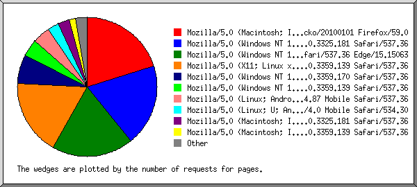
Listing browsers with at least 1 request for a page, sorted by the number of requests for pages.
| #reqs | #pages | browser |
|---|---|---|
| 876 | 15 | Mozilla/5.0 (Macintosh; Intel Mac OS X 10.12; rv:59.0) Gecko/20100101 Firefox/59.0 |
| 940 | 14 | Mozilla/5.0 (Windows NT 10.0; Win64; x64) AppleWebKit/537.36 (KHTML, like Gecko) Chrome/65.0.3325.181 Safari/537.36 |
| 1046 | 14 | Mozilla/5.0 (Windows NT 10.0; Win64; x64) AppleWebKit/537.36 (KHTML, like Gecko) Chrome/52.0.2743.116 Safari/537.36 Edge/15.15063 |
| 274 | 13 | Mozilla/5.0 (X11; Linux x86_64) AppleWebKit/537.36 (KHTML, like Gecko) Chrome/66.0.3359.139 Safari/537.36 |
| 593 | 5 | Mozilla/5.0 (Windows NT 10.0; Win64; x64) AppleWebKit/537.36 (KHTML, like Gecko) Chrome/66.0.3359.170 Safari/537.36 |
| 187 | 3 | Mozilla/5.0 (Windows NT 10.0; Win64; x64) AppleWebKit/537.36 (KHTML, like Gecko) Chrome/66.0.3359.139 Safari/537.36 |
| 40 | 3 | Mozilla/5.0 (Linux; Android 5.0.1; SAMSUNG SGH-I337M Build/LRX22C) AppleWebKit/537.36 (KHTML, like Gecko) SamsungBrowser/6.4 Chrome/56.0.2924.87 Mobile Safari/537.36 |
| 15 | 2 | Mozilla/5.0 (Linux; U; Android 4.2.2; en-gb; S400 Build/JDQ39) AppleWebKit/534.30 (KHTML, like Gecko) Version/4.0 Mobile Safari/534.30 |
| 93 | 2 | Mozilla/5.0 (Macintosh; Intel Mac OS X 10_12_4) AppleWebKit/537.36 (KHTML, like Gecko) Chrome/65.0.3325.181 Safari/537.36 |
| 62 | 1 | Mozilla/5.0 (Macintosh; Intel Mac OS X 10_12_4) AppleWebKit/537.36 (KHTML, like Gecko) Chrome/66.0.3359.139 Safari/537.36 |
| 1 | 1 | Mozilla/5.0 (compatible; Yahoo Link Preview; https://help.yahoo.com/kb/mail/yahoo-link-preview-SLN23615.html) |
| 1 | 1 | WhatsApp/0.2.8691 N |
| 21 | 0 | [not listed: 4 browsers] |
(Go To: Top | General Summary | Monthly Report | Daily Summary | Hourly Summary | Domain Report | Organization Report | Redirected Referrer Report | Failed Referrer Report | Referring Site Report | Browser Report | Browser Summary | Operating System Report | Status Code Report | File Size Report | File Type Report | Directory Report | Request Report)
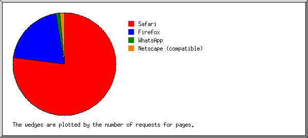
Listing browsers with at least 1 request for a page, sorted by the number of requests for pages.
| # | #reqs | #pages | browser |
|---|---|---|---|
| 1 | 3269 | 57 | Safari |
| 3254 | 55 | Safari/537 | |
| 15 | 2 | Safari/534 | |
| 2 | 876 | 15 | Firefox |
| 876 | 15 | Firefox/59 | |
| 3 | 1 | 1 | |
| 1 | 1 | WhatsApp/0 | |
| 4 | 1 | 1 | Netscape (compatible) |
| 2 | 0 | [not listed: 2 browsers] |
(Go To: Top | General Summary | Monthly Report | Daily Summary | Hourly Summary | Domain Report | Organization Report | Redirected Referrer Report | Failed Referrer Report | Referring Site Report | Browser Report | Browser Summary | Operating System Report | Status Code Report | File Size Report | File Type Report | Directory Report | Request Report)
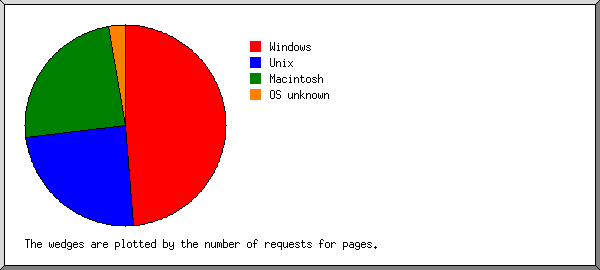
Listing operating systems, sorted by the number of requests for pages.
| # | #reqs | #pages | OS |
|---|---|---|---|
| 1 | 2768 | 36 | Windows |
| 2767 | 36 | Windows NT | |
| 1 | 0 | Unknown Windows | |
| 2 | 331 | 18 | Unix |
| 331 | 18 | Linux | |
| 3 | 1048 | 18 | Macintosh |
| 4 | 2 | 2 | OS unknown |
(Go To: Top | General Summary | Monthly Report | Daily Summary | Hourly Summary | Domain Report | Organization Report | Redirected Referrer Report | Failed Referrer Report | Referring Site Report | Browser Report | Browser Summary | Operating System Report | Status Code Report | File Size Report | File Type Report | Directory Report | Request Report)
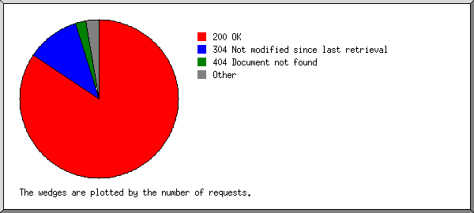
Listing status codes, sorted numerically.
| #reqs | status code |
|---|---|
| 3640 | 200 OK |
| 41 | 206 Partial content |
| 3 | 301 Document moved permanently |
| 26 | 302 Document found elsewhere |
| 468 | 304 Not modified since last retrieval |
| 74 | 404 Document not found |
| 7 | 500 Internal server error |
(Go To: Top | General Summary | Monthly Report | Daily Summary | Hourly Summary | Domain Report | Organization Report | Redirected Referrer Report | Failed Referrer Report | Referring Site Report | Browser Report | Browser Summary | Operating System Report | Status Code Report | File Size Report | File Type Report | Directory Report | Request Report)
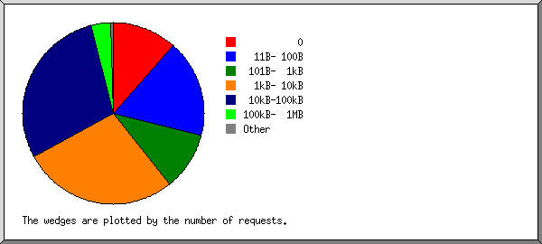
| size | #reqs | %bytes |
|---|---|---|
| 0 | 482 | |
| 1B- 10B | 16 | |
| 11B- 100B | 720 | 0.04% |
| 101B- 1kB | 429 | 0.21% |
| 1kB- 10kB | 1148 | 4.70% |
| 10kB-100kB | 1208 | 28.07% |
| 100kB- 1MB | 146 | 66.98% |
(Go To: Top | General Summary | Monthly Report | Daily Summary | Hourly Summary | Domain Report | Organization Report | Redirected Referrer Report | Failed Referrer Report | Referring Site Report | Browser Report | Browser Summary | Operating System Report | Status Code Report | File Size Report | File Type Report | Directory Report | Request Report)
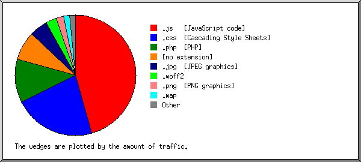
Listing extensions with at least 0.1% of the traffic, sorted by the amount of traffic.
| #reqs | %bytes | extension |
|---|---|---|
| 793 | 45.50% | .js [JavaScript code] |
| 283 | 22.05% | .css [Cascading Style Sheets] |
| 1986 | 11.65% | .php [PHP] |
| 651 | 7.86% | [no extension] |
| 119 | 4.85% | .jpg [JPEG graphics] |
| 67 | 2.97% | .woff2 |
| 150 | 2.02% | .png [PNG graphics] |
| 7 | 1.65% | .map |
| 15 | 0.99% | .jpeg [JPEG graphics] |
| 63 | 0.22% | [directories] |
| 3 | 0.18% | .woff |
| 12 | 0.05% | [not listed: 2 extensions] |
(Go To: Top | General Summary | Monthly Report | Daily Summary | Hourly Summary | Domain Report | Organization Report | Redirected Referrer Report | Failed Referrer Report | Referring Site Report | Browser Report | Browser Summary | Operating System Report | Status Code Report | File Size Report | File Type Report | Directory Report | Request Report)
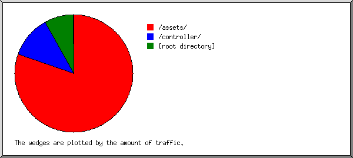
Listing directories with at least 0.01% of the traffic, sorted by the amount of traffic.
| #reqs | %bytes | directory |
|---|---|---|
| 1438 | 80.22% | /assets/ |
| 1986 | 11.65% | /controller/ |
| 714 | 8.07% | [root directory] |
| 11 | 0.05% | /views/ |
(Go To: Top | General Summary | Monthly Report | Daily Summary | Hourly Summary | Domain Report | Organization Report | Redirected Referrer Report | Failed Referrer Report | Referring Site Report | Browser Report | Browser Summary | Operating System Report | Status Code Report | File Size Report | File Type Report | Directory Report | Request Report)
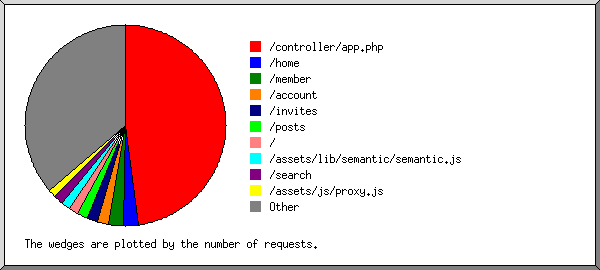
Listing files with at least 20 requests, sorted by the number of requests.
| #reqs | %bytes | last time | file |
|---|---|---|---|
| 1986 | 11.65% | May/15/18 7:52 AM | /controller/app.php |
| 101 | 0.70% | May/15/18 7:52 AM | /home |
| 97 | 1.14% | May/15/18 7:43 AM | /member |
| 77 | 2.22% | May/15/18 7:39 AM | /account |
| 69 | 0.90% | May/15/18 7:43 AM | /invites |
| 68 | 0.69% | May/15/18 7:44 AM | /posts |
| 63 | 0.22% | May/15/18 7:39 AM | / |
| 13 | 0.04% | May/13/18 8:49 AM | /?197.210.47.142 |
| 63 | 35.03% | May/15/18 7:39 AM | /assets/lib/semantic/semantic.js |
| 63 | 0.24% | May/14/18 7:18 AM | /search |
| 51 | 0.09% | May/15/18 7:39 AM | /assets/js/proxy.js |
| 51 | 2.47% | May/15/18 7:39 AM | /assets/lib/jquery.min.js |
| 48 | 1.21% | May/15/18 7:39 AM | /assets/css/styles.css |
| 47 | 2.03% | May/15/18 7:39 AM | /assets/lib/font-awesome/fonts/fontawesome-webfont.woff2 |
| 47 | 2.03% | May/15/18 7:39 AM | /assets/lib/font-awesome/fonts/fontawesome-webfont.woff2?v=4.5.0 |
| 45 | 0.07% | May/15/18 7:39 AM | /assets/images/prologo.png |
| 44 | 0.28% | May/15/18 7:39 AM | /assets/lib/nprogress/nprogress.js |
| 44 | 0.57% | May/15/18 7:51 AM | /projects |
| 43 | 0.50% | May/15/18 7:46 AM | /groups |
| 42 | 0.55% | May/15/18 7:39 AM | /assets/lib/jquery.blockUI.js |
| 41 | 0.10% | May/15/18 7:39 AM | /assets/lib/jquery.redirect.js |
| 41 | 0.81% | May/15/18 6:43 AM | /assets/lib/bootstrap/js/bootstrap.min.js |
| 39 | 0.75% | May/15/18 7:39 AM | /assets/lib/font-awesome/css/font-awesome.css |
| 36 | 16.65% | May/15/18 7:39 AM | /assets/lib/semantic/semantic.css |
| 36 | 1.51% | May/15/18 7:39 AM | /assets/images/banner.jpg |
| 36 | 0.03% | May/15/18 7:39 AM | /assets/lib/nprogress/nprogress.css |
| 34 | 2.38% | May/15/18 6:43 AM | /assets/lib/bootstrap/css/bootstrap.min.css |
| 32 | 2.36% | May/15/18 7:40 AM | /assets/images/idea.jpg |
| 31 | 0.70% | May/15/18 7:39 AM | /assets/lib/font-awesome/css/font-awesome.min.css |
| 31 | 0.05% | May/15/18 7:42 AM | /assets/css/s_style.css |
| 30 | 0.19% | May/15/18 7:40 AM | /assets/images/man.png |
| 27 | 0.11% | May/15/18 7:40 AM | /assets/js/signup.js |
| 27 | 0.03% | May/15/18 7:40 AM | /assets/js/login.js |
| 27 | 0.06% | May/15/18 7:40 AM | /assets/js/landing.js |
| 26 | 0.07% | May/15/18 6:48 AM | /assets/images/linkedin.png |
| 22 | 0.21% | May/15/18 7:43 AM | /assets/js/member.js |
| 21 | 0.13% | May/15/18 7:42 AM | /assets/js/invites.js |
| 21 | 0.14% | May/15/18 7:40 AM | /assets/resources/pics/profile-placeholder.png |
| 21 | 0.06% | May/15/18 7:44 AM | /assets/upload/js/script.js |
| 20 | 0.03% | May/15/18 7:52 AM | /assets/js/search.js |
| 20 | 0.09% | May/15/18 7:44 AM | /assets/lib/bootstrap-select/css/bootstrap-select.min.css |
| 528 | 12.98% | May/15/18 7:52 AM | [not listed: 86 files] |